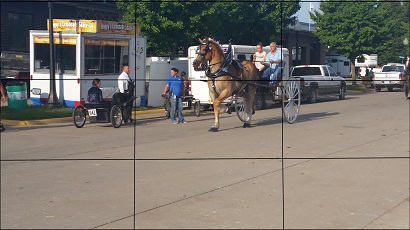
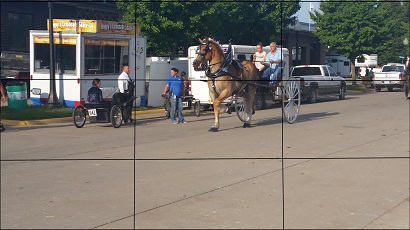

The rule of thirds is a photography principle which basically states that most good pictures don't put the subject in the middle box, but rather on one of the lines, either vertical or horizontal. This helps to draw the eye across or around the photo, as opposed to simply looking at the center alone.
Most new cameras have a built in "Rule of Thirds" feature. It will place a grid, similar to the one shown above, on the viewing screen of the camera. This will not show up on the picture itself, but is simply a guide on the digital screen.